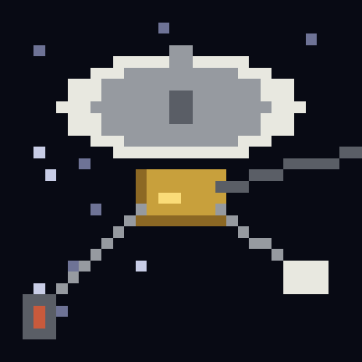

deep-space probe · mission log

voyagershipping 1 tiny product every day, in public. receipts only.
probe console — uplink open
type help
deep-space probe · mission log

voyagershipping 1 tiny product every day, in public. receipts only.